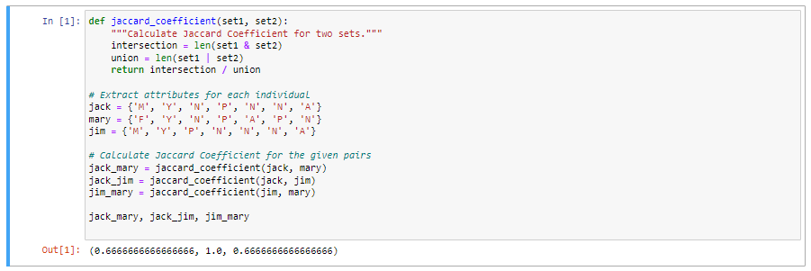

✥ Unit 5: Clustering
Outcomes from the Team Exercises and activites
In data analysis and machine learning, clustering—more specifically, K-means clustering—is a well-known technique for organising data points according to their commonalities. The idea of similarity and dissimilarity between data objects is at the heart of clustering, and it is assessed using a variety of metrics, including Jaccard, Manhattan, Cosine, and Euclidean distances (Yan., et al, 2020).
Finding naturally occurring groups in data is the purpose of clustering. For example, in bioinformatics, clustering is used to group genes with similar expression patterns, or in market segmentation, to group clients based on purchase behaviour. By enabling meaningful data segmentation, clustering facilitates meaningful understanding of the data's structure, lowers dimensionality, and enhances decision-making.
As mentioned in the lecture cast, there are several different kinds of clustering algorithms, such as Partitioning (K-means Clustering), Density-based, Grid-based, Distribution-based, and Connectivity-based (e.g., Hierarchical Clustering). Every kind has its own advantages and disadvantages and is appropriate for varying types of information and goals (Wong, 2023).
K-means clustering is a the most popular method due to its simplicity and efficiency. It aims to partition a dataset into a predefined number of clusters while minimizing the variance within clusters and maximizing the variance between clusters (Li., et al, 2021). Although the K-means clustering approach is widely utilised in several data mining domains, its random seed selection might make it susceptible. To lower this risk, an improved K-means clustering technique called k*-means was proposed together with three optimisation principles.
The number of clusters (K) that is selected can have a big impact on how successful K-means clustering is. Plotting the explained variation versus the number of clusters and finding the "elbow" point—where the rate of drop abruptly changes—are techniques like the Elbow Method used to find the ideal K value (Marutho., et al, 2018). Another popular metric for assessing how compact a cluster is the Sum of Squared Error (SSE), which calculates the squared distance between each cluster centroid and each data point.
Furthermore, several optimisation strategies and assessment criteria have been put forth to improve K-means' performance and offer a more perceptive assessment of the clusters that are produced. These include using global optimisation methods, optimising the initialization of cluster centroids, and using metrics like separation, cohesion, and the silhouette approach for a more thorough assessment of the clustering outcomes.
E-Portfolio activity:
The table shows the pathological test results for three individuals:
| Name | Gender | Fever | Cough | Test-1 | Test-2 | Test-3 | Test-4 |
|---|---|---|---|---|---|---|---|
| Jack | M | Y | N | P | N | N | A |
| Mary | F | Y | N | P | A | P | N |
| Jim | M | Y | P | N | N | N | A |
Calculate Jaccard coefficient for the following pairs:
- (Jack, Mary)
- (Jack, Jim)
- (Jim, Mary)
The Jaccard coefficient, also known as the Jaccard similarity index, is defined as:
J(A,B) = (|A∩B|) / (|A∪B|)
Where:
- A and B are two sets.
- |A∩B| is the size of the intersection of the two sets.
- |A∪B| is the size of the union of the two sets.
To calculate the Jaccard coefficient, treat each individual's attributes as a set, with similar attributes in the intersection set and all attributes in the union set. Handle 'A' as distinct, as it can affect the similarity score. If ignored, only non-'A' attributes are considered. For this calculation, 'A' is treated as a distinct value.

The Jaccard coefficient of 1.0 indicates that Jack and Jim have the same traits, but the attributes of Jim and Mary and Jack and Mary are comparable by about 66.67%.
Reflection:
Clustering is a technique with numerous applications in various fields, including market segmentation and bioinformatics. Its nuances have led to an appreciation of its potential and the myriad of applications it holds. The exploration of different metrics and methods has revealed the importance of making informed choices in clustering analysis.
K-means clustering is an attractive choice due to its simplicity and efficiency, but the optimization of the number of clusters and sensitivity to initialization are challenges. The continuous exploration and optimization efforts in clustering algorithms reflect the community's endeavour to refine these methods for better accuracy and insights.
This iterative process of learning, adapting, and optimizing makes the field of clustering a continually evolving landscape.
References:
- Yan, X. and Lyu, D. (2020) ‘Comparing dissimilarity metrics for clustering gene into functional modules using machine learning’, Proceedings of the 2020 10th International Conference on Bioscience, Biochemistry and Bioinformatics [Preprint]. doi:10.1145/3386052.3386067.
- Wong, K.J. (2023) 6 types of clustering methods - an overview, Medium.
- Li, Y. et al. (2021) ‘Customer segmentation using K-means clustering and the adaptive particle swarm optimization algorithm’, Applied Soft Computing, 113, p. 107924. doi:10.1016/j.asoc.2021.107924.
- Monsalves, B. and Damjan (2022) Types of clustering algorithms in machine learning with examples, Blogs & Updates on Data Science, Business Analytics, AI Machine Learning.
- Marutho, D. et al. (2018) ‘The determination of cluster number at K-mean using elbow method and purity evaluation on Headline news’, 2018 International Seminar on Application for Technology of Information and Communication [Preprint]. doi:10.1109/isemantic.2018.8549751.
- Clustering in data mining (2022) GeeksforGeeks.
- Kumari, R. et al. (2016) ‘Anomaly detection in network traffic using K-mean clustering’, 2016 3rd International Conference on Recent Advances in Information Technology (RAIT) [Preprint]. doi:10.1109/rait.2016.7507933.